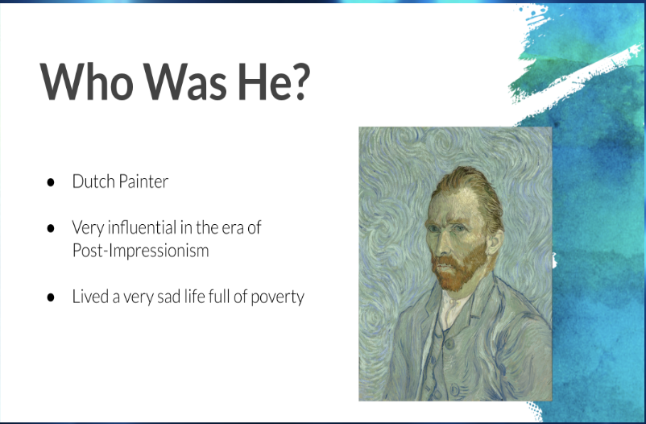

Van Gogh Presentation

Medium: Google Slides
Click this link to view the entire presentation.
We did this project to learn more about artists of the Romantic and Impressionist Eras. Vibhav, Dmitry and I were all fascinated by Van Gogh, his art and his life, and so we wanted to learn more about him and present what we had learned. We learned more about his art style, his techniques and his life. This was similar to our Donatello presentation from cycle 3, and helped us to further develop our presentation skills.